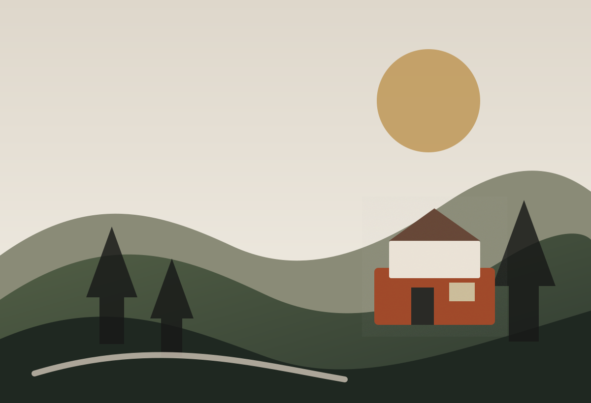

Serra Negra
12–14 set 2026
Ticket de viagemFim de semana na serra2 viajantes · ritmo equilibrado
SN-26091208
Descubra lugares, combine experiências e monte um roteiro que acompanha seu ritmo. Depois, guarde o caminho que realmente viveu.

A plataforma organiza opções por contexto, não por uma lista fixa de “melhores lugares”.
Quem vai, quanto tempo tem, transporte, interesses, ritmo e até o clima ajudam a organizar possibilidades sem tirar sua autonomia.
Carimbos surgem das visitas registradas, com formas, ícones e cores que variam dentro da identidade do sistema.
12–14 set 2026
SN-260912Parceiros ganham presença contextual na jornada, sem transformar a experiência em um catálogo de anúncios.
Este é o direcionamento visual para o produto, não a página de documentação do repositório.